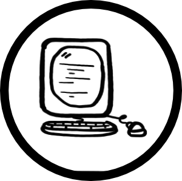

Gordon Keller Engineering is a private engineering consulting practice
based in Santa Cruz, CA.
Design, fabrication, and innovation expertise including:
- Robotics
 ROS, Control Systems, Sencsing, Computer Vision, sUAS, Simulation
ROS, Control Systems, Sencsing, Computer Vision, sUAS, Simulation
- Electronics
Schematic design, board layout and bring-up, testing, and simulation
- Firmware

stm32 dev and deployment, QMK
- Software
algorithm implementation and analysis, open-source contribution and hosting
- Design and Fabrication
 algorithm implementation and analysis, open-source contribution and hosting
algorithm implementation and analysis, open-source contribution and hosting
- Front-end interfaces
QT-based desktop and mobile interface
- Scientific Research and Publications
Field research experience for geoscientific (geophysics, volcanlology)
research
- UAS Work (Videography, Search-and-Rescue, etc.)
 Work involving the use of sUAS (or small drones) for filming, etc.
Work involving the use of sUAS (or small drones) for filming, etc.
- Screenprinting
 Small-batch screenprinting stuff.
Small-batch screenprinting stuff.
Initiatives including pro bono design or assistance for qualifying applicants.
Visit the "Assistance" page to learn more. Other case rates are outlined on
the "Rates" page.
- linkedin
- facebook
- twitter
- instagram
- thingiverse
- github
Website designed and maintained by gordon keller,
hosted by Vultr, and domain from Epik. gordonkeller.com Copyright © 2021-2022.